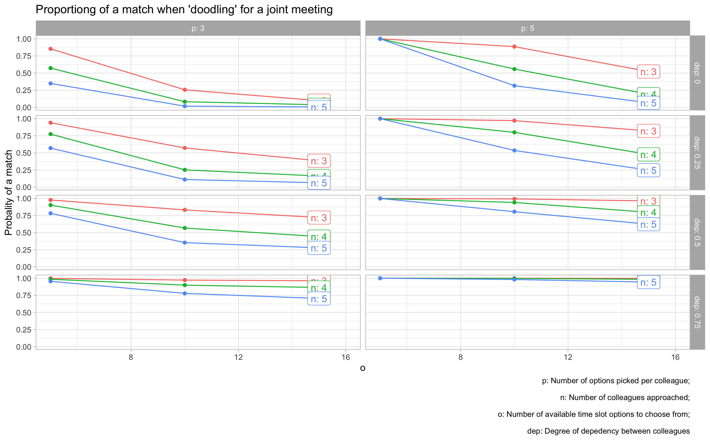

1 Motivation
Have you ever tried to find a time slot for a meeting using a tool such as “Doodle”?
If not, consider yourself lucky. Otherwise you will be well aware of the chagrin of finding a time slot that suits all of your colleagues.
Let’s call a time slot where all of your colleagues invited for the meeting have a free time slot a matching time slot, or a match for short.
Here’s a sample image for a “doodle” in order to find a a match.

Some persons find that the best way to find a matchting time slot is to offer a great number of time slots to your colleagues. Personally I find this appraoch difficult as I would have to keep track of and block a lot of time slots in my calendar. In addition, I feel it would be difficult to find a matching time slot as most colleagues will not take the hazzle and report many free time slots. Call me pessimistic, but I suspect that most colleagues will choose about 3 time slots, but not more, because it would be too difficult for them to keep their calendars in sync. (A sentiment I share.)
Now, I wondered that’s the probability of finding at least one matching time slot when addressing n colleagues, providing each of them with o options, assuming each colleague will pick p options completely random.
In more stochastic parlance, this problem is a somewhat involved example of the collision problem.
Here’s a simulation study for that.
2 Setup
library(tidyverse) # data wrangling
library(tictoc) # measure time3 Constants/Parameters
n_colleagues <- 3 # number of colleagues invited to your meeting
p <- 3 # number of appointment options _p_icked per colleague
o <- 30 # number of possible _o_ptions to choose from
r <- 1e3 # number of simulated _r_epetions/samples
dep <- 0 # dependency between reviewers4 Model
A number of n_colleague colleagues pick p options from a list of o possible options.
We are interested in the probability that all colleagues pick (at least) one time the same slot.
We consider the the number picked options, p, fix.
5 Some Assumptions
Picking slots (within a colleague) is independent, eg., picking slot 1 is indepent from picking slot 2. In other words, knowing that you have picked slot 1 does not tell my anythin new about the probability that you will pick slot 2.
The colleagues pick slots independently from each other.
6 Example
Three colleagues - A,B,C - pick 3 slots from 10 options.
For example, colleague A picks options 1, 2, and 3.
| Colleague | Pick1 | Pick2 | Pick3 |
|---|---|---|---|
| A | 1 | 2 | 3 |
| B | 1 | 7 | 9 |
| C | 1 | 7 | 10 |
We have one match: All chose the option 1. (And to choose the option, but that’s not enough for a match, as not all persons chose this number.)
7 Analytical approach
7.1 Limiting to picking 1 option
Finding an analytical solution for the probability of \(n\) person picking 1 number from \(o\) options is quite straight forward. For example, let’s assume for the moment \(n=3, o=10\). Then we have
- The first person can choose any number, i.e., \(Pr_1=1\).
- The second person must choose the same number as the first one, so 1 out of 10, ie., \(Pr_2=1/10\).
- The third peson must again choose the same number, so \(Pr_3=1/10\).
In total, \(Pr = Pr_1 \cdot Pr_2 \cdot Pr_3\), as we assume independence between persons.
More generally, \(Pr = \frac{1}{o}^{n-1}\).
7.2 Generalizing to picking \(p\) options
Let’s consider picking \(p=3\) options.
One might think that the solution is
\(Pr = \frac{1}{o}^{n-1} + \frac{1}{o-1}^{n-1} + \frac{1}{o-2}^{n-1}\)
but this appears not to be quite right, at least quite different numbers are found using the Monte Carlo approach below.
Anyhow, a simple alternative to an analytical solution is to use simulation, ie., a Monte Carlo approach.
8 Monte Carlo as an alternative
The R package ‘doodleproblem’ provides Monte Carlo methods to compute the Doodle match probability.
This repo analyzes the probability of finding an agreed time slot between multiple colleagues (“doodle problem”). Different influence factors are considered, different assumptions are tested, and their effect is compared. Monte Carlo methods are used.
8.1 Setup
library(tidyverse)
library(doodleproblem)8.2 Test
prob_doodle_match(n_colleagues = 5,
o = 10,
p = 3,
dep = 0)
#> [1] 0.029 Modelling without dependency
9.1 Examples
3 colleagues pick 1 option from 10 options:
prob_doodle_match(n_colleagues = 3,
o = 8,
p = 1,
dep = 0)
#> [1] 0.0183 colleagues pick 2 options from 10 options:
prob_doodle_match(n_colleagues = 3,
o = 10,
p = 2,
dep = 0)
#> [1] 0.0769.2 Sampling distribution
Get the sampling distribution:
tic()
smpl_distrib <- mosaic::do(100) * prob_doodle_match(n_colleagues = 3,
o = 10,
p = 2,
dep = 0)
toc()
#> 101.498 sec elapsedmean(smpl_distrib$prob_doodle_match)
#> [1] 0.07576903
sd(smpl_distrib$prob_doodle_match)
#> [1] 0.003093208ggplot(smpl_distrib) +
aes(x = prob_doodle_match) +
geom_density()
As can be seen, the probability of finding a matching time slot is quite small, given the parameter values above. Not impossible, but too low to rely on this approach in my opinion.
9.3 o=10; Make a matching more probable
Let’s provide less options to chose from in order to find a time slot for the meeting to your colleagues:
n_colleagues <- 3
o <- 7
smples_tbl2 <- prob_doodle_match(n_colleagues = n_colleagues,
o = o,
p = p,
dep = dep,
return_prob = FALSE)
smples_tbl2
#> # A tibble: 2 × 3
#> Freq n_matches prop_matches
#> <int> <int> <dbl>
#> 1 3 555 0.527
#> 2 NA 499 0.473Looks much better; we have some realistic chances of finding a match.
plot_matches(smples_tbl2, n_colleagues, p = p, o = o, dep = dep)
Now we can see that a matching has become more probable, although still not highly likely.
9.4 o=5; Make a matching highly probable
Let’s provide only a few options too chose from in order to find a time slot for the meeting to your colleagues:
o <- 5 # number of time slot options too chose from
smples_tbl3 <- prob_doodle_match(n_colleagues = n_colleagues,
o = o,
p = p,
dep = dep,
return_prob = FALSE)
plot_matches(smples_tbl3, n_colleagues, p = p, o = o, dep = dep)
That really looks good; that’s a realistic chance to find a match.
9.5 Grid of different parameter values
Let’s try different parameter values and compute the probability of a match.
Here’s the grid using a cartesian expansion:
9.6 Populate grid
tic()
grid1 <- populate_grid(n_colleagues = 2:5,
o = c(5, 10, 15, 20, 25, 30),
p = c(3, 5, 7, 10),
dep = 0)
toc()
Quite slow.
It’s quicker to load it from disk.
data(grid1)glimpse(grid1)
#> Rows: 96
#> Columns: 5
#> $ n_colleagues <int> 2, 2, 2, 2, 2, 2, 2, 2, 2, 2, 2, 2, 2, 2, 2, 2, 2, 2, 2, …
#> $ o <dbl> 5, 5, 5, 5, 10, 10, 10, 10, 15, 15, 15, 15, 20, 20, 20, 2…
#> $ p <dbl> 3, 5, 7, 10, 3, 5, 7, 10, 3, 5, 7, 10, 3, 5, 7, 10, 3, 5,…
#> $ dep <dbl> 0, 0, 0, 0, 0, 0, 0, 0, 0, 0, 0, 0, 0, 0, 0, 0, 0, 0, 0, …
#> $ match_prob <dbl> 1.0000000, 1.0000000, 1.0000000, 1.0000000, 0.7635304, 0.…9.7 Visualize grid 1
grid1 |>
rename(n = n_colleagues) |>
ggplot(aes(x = o, y = match_prob)) +
geom_line() +
geom_point() +
facet_grid(n ~ p,
labeller = labeller(n = label_both, p = label_both)) +
labs(title = "Proportiong of a match when Doodling for an joint meeting",
caption = "p: Number of options picked per colleague;\n
n: number of colleagues approached"
)
9.8 Visualize grid 2
Let’s try a different visualization.
vis_grid(grid1)
9.9 Caveats
This analysis builds on some assumptions. One is that the the colleagues choose their slots randomly. However, assumption may fail. For example, if 3 have 5 options and ask to choose 3, people may feel pushed too hard and do crazy things.
9.10 Conclusion
There are a number of things to be learnt from this simulation:
- The higher the number of _o_ptions to pick from, the less likely is it to come to a match.
- The highher the number of _p_icked appointment options, the more likely it is to come to a match.
- The more colleagues are in the game, the less likely it is to come to a match.
All these insights are straight forward. However, we can also make some quantitative conclusions:
- More than 20 options to choose from is crazy no matter what.
- If each colleagues picks 3 options only (what I would do), than you need to present less than 10 options.
- If you can present 5 options only, you will be on the safe side and will likely come to a match.
10 Introducing dependency between colleagues
More realistically, there is dependency to be expected in the chosen slots between the reviewers.
Let’s try to model that.
10.1 Some notation
First, let’s note that we begin with a LaPlaceian assumption, ie. that the probability of a slot is uniformly distributed. In other words, we are indifferent to the plausibility of each option. That means the probability of chosing some option \(i\) is 1 divided by the number of options:
\[Pr_{oi} = \frac{1}{|o|}\]
- \(Pr_p\): The probability of the set of picked options.
Pr_P <- p / o- \(Pr_{pi}\): The probability of the \(i\)th picked option
- \(Pr_{pi} := \frac{|p|}{|o|}\)
Pr_pi = Pr_P / p- \(Pr_{ui}\): The probability of the \(i\) unpicked option
- \(Pr_{ui} := 1 - Pr_pi = \frac{|o-p|}{|o|} = \frac{|u|}{|o|}\), where \(|u|\) indicates the cardinality of \(U\).
u <- o - p
Pr_ui = u / o- \(Pr_U\): The probability of the set \(U\).
Pr_U <- 1 - Pr_PLet’s call the \(d\) the degree of dependency between the colleagues. For simplicity, let’s only allow the values 0, .3, .6., .9 for dependency, indicating no, weak, medium, and strong dependency.
Let’s call \(P\) the set of picked options, \(O\) the set of all options, and \(U\) the set of unpicked options.
10.2 Reallocating probability
For example, introducing a “strong” dependency is defined here as reallocating \(d=.9\) of the probability from \(U\) to \(P\).
\(Pr_u^n\) is the new probability of \(Pr_u\) after reallocating the probability.
d <- .9
Pr_U_new <- Pr_U - d*Pr_U\(Pr_{ui}^n\) is the new probability of the \(i\)th option in the set of unpicked options.
Pr_Ui_new <- Pr_U_new / u\(Pr_p^n\) is the new probability of \(Pr_p\) after reallocating the probability.
Pr_P_new <- Pr_P + d*Pr_U\(Pr_{pi}^n\) is the new probability of the \(i\)th option in the set of picked options.
Pr_Pi_new <- Pr_P_new / p10.3 Function for reallocating probability
Check:
sample_with_dependency(p_set = c(3, 1, 9), o = 10, dep = .6)
#> [1] 4 9 10Check:
slots_chosen <- sample_with_dependency(p_set = c(3, 1, 9), o = 10, dep = .3)
slots_chosen
#> [1] 9 1 410.4 Examples with dependency
prob_doodle_match(n_colleagues = 3,
o = 8,
p = 1,
dep = .6)
#> [1] 0.44510.5 Grid of different parameter values
Let’s try different parameter values and compute the probability of a match.
Here’s the grid using a cartesian expansion:
10.6 Populate grid with depedency
tic()
grid2 <- populate_grid(n_colleagues = 3:5,
o = c(5, 10, 15),
p = c(3, 5),
dep = c(0, .25, .5, .75))
toc()
#> 77.601 sec elapsedIt’s quicker to load from disk:
data(grid2)10.7 Vis grid
vis_grid2(grid2, facet_var = "dep")
11 Reproducibility
#> ─ Session info ───────────────────────────────────────────────────────────────────────────────────────────────────────
#> setting value
#> version R version 4.2.1 (2022-06-23)
#> os macOS Big Sur ... 10.16
#> system x86_64, darwin17.0
#> ui X11
#> language (EN)
#> collate en_US.UTF-8
#> ctype en_US.UTF-8
#> tz Europe/Berlin
#> date 2024-01-29
#> pandoc 3.1.1 @ /Applications/RStudio.app/Contents/Resources/app/quarto/bin/tools/ (via rmarkdown)
#>
#> ─ Packages ───────────────────────────────────────────────────────────────────────────────────────────────────────────
#> package * version date (UTC) lib source
#> blogdown 1.18 2023-06-19 [1] CRAN (R 4.2.0)
#> bookdown 0.36 2023-10-16 [1] CRAN (R 4.2.0)
#> bslib 0.5.1 2023-08-11 [1] CRAN (R 4.2.0)
#> cachem 1.0.8 2023-05-01 [1] CRAN (R 4.2.0)
#> callr 3.7.3 2022-11-02 [1] CRAN (R 4.2.0)
#> cli 3.6.1 2023-03-23 [1] CRAN (R 4.2.0)
#> codetools 0.2-19 2023-02-01 [1] CRAN (R 4.2.0)
#> colorout * 1.3-0 2023-11-08 [1] Github (jalvesaq/colorout@8384882)
#> colorspace 2.1-0 2023-01-23 [1] CRAN (R 4.2.0)
#> crayon 1.5.2 2022-09-29 [1] CRAN (R 4.2.1)
#> devtools 2.4.5 2022-10-11 [1] CRAN (R 4.2.1)
#> digest 0.6.33 2023-07-07 [1] CRAN (R 4.2.0)
#> dplyr * 1.1.3 2023-09-03 [1] CRAN (R 4.2.0)
#> ellipsis 0.3.2 2021-04-29 [1] CRAN (R 4.2.0)
#> evaluate 0.21 2023-05-05 [1] CRAN (R 4.2.0)
#> fansi 1.0.5 2023-10-08 [1] CRAN (R 4.2.0)
#> farver 2.1.1 2022-07-06 [1] CRAN (R 4.2.0)
#> fastmap 1.1.1 2023-02-24 [1] CRAN (R 4.2.0)
#> forcats * 1.0.0 2023-01-29 [1] CRAN (R 4.2.0)
#> fs 1.6.3 2023-07-20 [1] CRAN (R 4.2.0)
#> generics 0.1.3 2022-07-05 [1] CRAN (R 4.2.0)
#> ggplot2 * 3.4.4 2023-10-12 [1] CRAN (R 4.2.0)
#> glue 1.6.2 2022-02-24 [1] CRAN (R 4.2.0)
#> gtable 0.3.4 2023-08-21 [1] CRAN (R 4.2.0)
#> highr 0.10 2022-12-22 [1] CRAN (R 4.2.0)
#> hms 1.1.3 2023-03-21 [1] CRAN (R 4.2.0)
#> htmltools 0.5.6.1 2023-10-06 [1] CRAN (R 4.2.0)
#> htmlwidgets 1.6.2 2023-03-17 [1] CRAN (R 4.2.0)
#> httpuv 1.6.11 2023-05-11 [1] CRAN (R 4.2.0)
#> jquerylib 0.1.4 2021-04-26 [1] CRAN (R 4.2.0)
#> jsonlite 1.8.7 2023-06-29 [1] CRAN (R 4.2.0)
#> knitr 1.45 2023-10-30 [1] CRAN (R 4.2.1)
#> labeling 0.4.3 2023-08-29 [1] CRAN (R 4.2.0)
#> later 1.3.1 2023-05-02 [1] CRAN (R 4.2.0)
#> lifecycle 1.0.4 2023-11-07 [1] CRAN (R 4.2.1)
#> lubridate * 1.9.3 2023-09-27 [1] CRAN (R 4.2.0)
#> magrittr 2.0.3 2022-03-30 [1] CRAN (R 4.2.0)
#> memoise 2.0.1 2021-11-26 [1] CRAN (R 4.2.0)
#> mime 0.12 2021-09-28 [1] CRAN (R 4.2.0)
#> miniUI 0.1.1.1 2018-05-18 [1] CRAN (R 4.2.0)
#> munsell 0.5.0 2018-06-12 [1] CRAN (R 4.2.0)
#> pillar 1.9.0 2023-03-22 [1] CRAN (R 4.2.0)
#> pkgbuild 1.4.0 2022-11-27 [1] CRAN (R 4.2.0)
#> pkgconfig 2.0.3 2019-09-22 [1] CRAN (R 4.2.0)
#> pkgload 1.3.2.1 2023-07-08 [1] CRAN (R 4.2.0)
#> prettyunits 1.1.1 2020-01-24 [1] CRAN (R 4.2.0)
#> processx 3.8.2 2023-06-30 [1] CRAN (R 4.2.0)
#> profvis 0.3.8 2023-05-02 [1] CRAN (R 4.2.0)
#> promises 1.2.1 2023-08-10 [1] CRAN (R 4.2.0)
#> ps 1.7.5 2023-04-18 [1] CRAN (R 4.2.0)
#> purrr * 1.0.2 2023-08-10 [1] CRAN (R 4.2.0)
#> R6 2.5.1 2021-08-19 [1] CRAN (R 4.2.0)
#> Rcpp 1.0.11 2023-07-06 [1] CRAN (R 4.2.0)
#> readr * 2.1.4 2023-02-10 [1] CRAN (R 4.2.0)
#> remotes 2.4.2.1 2023-07-18 [1] CRAN (R 4.2.0)
#> rlang 1.1.1 2023-04-28 [1] CRAN (R 4.2.0)
#> rmarkdown 2.25 2023-09-18 [1] CRAN (R 4.2.0)
#> rstudioapi 0.15.0 2023-07-07 [1] CRAN (R 4.2.0)
#> sass 0.4.7 2023-07-15 [1] CRAN (R 4.2.0)
#> scales 1.2.1 2022-08-20 [1] CRAN (R 4.2.0)
#> sessioninfo 1.2.2 2021-12-06 [1] CRAN (R 4.2.0)
#> shiny 1.8.0 2023-11-17 [1] CRAN (R 4.2.1)
#> stringi 1.7.12 2023-01-11 [1] CRAN (R 4.2.0)
#> stringr * 1.5.1 2023-11-14 [1] CRAN (R 4.2.1)
#> tibble * 3.2.1 2023-03-20 [1] CRAN (R 4.2.0)
#> tidyr * 1.3.0 2023-01-24 [1] CRAN (R 4.2.0)
#> tidyselect 1.2.0 2022-10-10 [1] CRAN (R 4.2.0)
#> tidyverse * 2.0.0 2023-02-22 [1] CRAN (R 4.2.0)
#> timechange 0.2.0 2023-01-11 [1] CRAN (R 4.2.0)
#> tzdb 0.4.0 2023-05-12 [1] CRAN (R 4.2.0)
#> urlchecker 1.0.1 2021-11-30 [1] CRAN (R 4.2.0)
#> usethis 2.2.2 2023-07-06 [1] CRAN (R 4.2.0)
#> utf8 1.2.3 2023-01-31 [1] CRAN (R 4.2.0)
#> vctrs 0.6.4 2023-10-12 [1] CRAN (R 4.2.0)
#> withr 2.5.2 2023-10-30 [1] CRAN (R 4.2.1)
#> xfun 0.40 2023-08-09 [1] CRAN (R 4.2.0)
#> xtable 1.8-4 2019-04-21 [1] CRAN (R 4.2.0)
#> yaml 2.3.7 2023-01-23 [1] CRAN (R 4.2.0)
#>
#> [1] /Users/sebastiansaueruser/Rlibs
#> [2] /Library/Frameworks/R.framework/Versions/4.2/Resources/library
#>
#> ──────────────────────────────────────────────────────────────────────────────────────────────────────────────────────